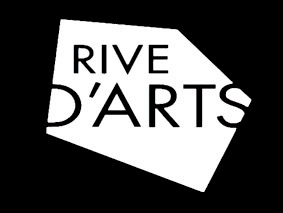

Cette installation propose un plongeon sensoriel et spatial dans le spectre sonore. Cette immersion offre aux spectateurs la possibilité d‘explorer, de réinterpréter la composition musicale en temps réel.
La Bande Passante, instrument de musique à part entière, permet de rentrer physiquement dans la matière sonore, l’architecture diffusant elle-même la partition dans l’espace. Un simple mouvement suffit au spectateur pour jouer avec l’écriture musicale. D‘un geste, il l’explore, la sculpte, l’effleure tel un archet.
N'hésitez pas à nous contacter, que ce soit pour une demande de diffusion ou pour toutes autres questions.
labandepassante.info@gmail.com
Création financée par Mécène et Loire.
Création Soutenue par le DICRéAM, dispositif du CNC.
Merci au théatre du Quai, Angers.
Merci à Rives d'Arts, les Ponts-de-Cé.

Merci au SAAS, Marty Sports, EA des Banchais, Stereolux